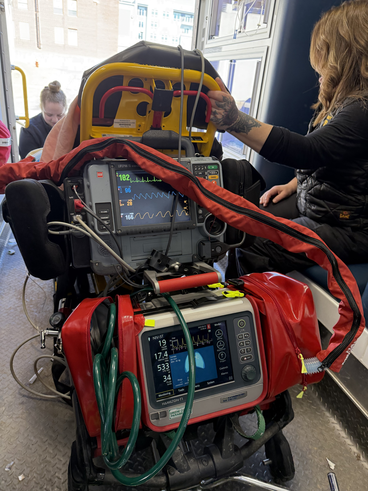
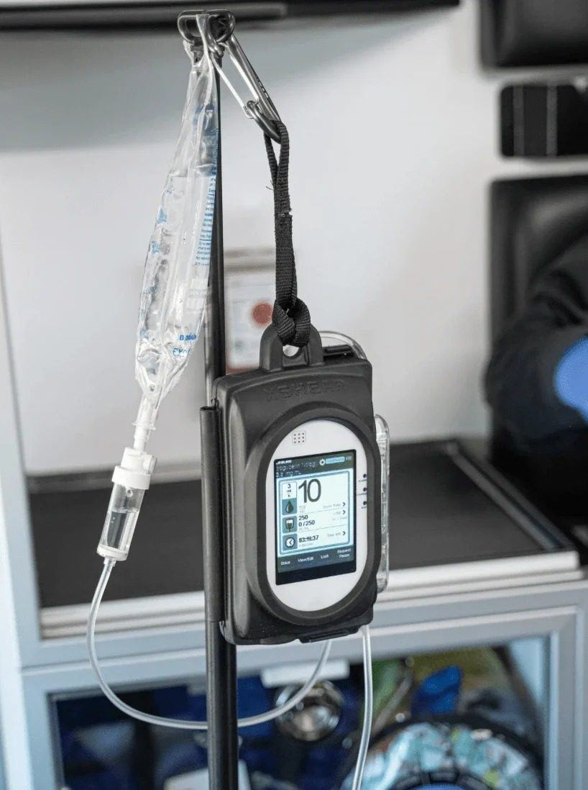
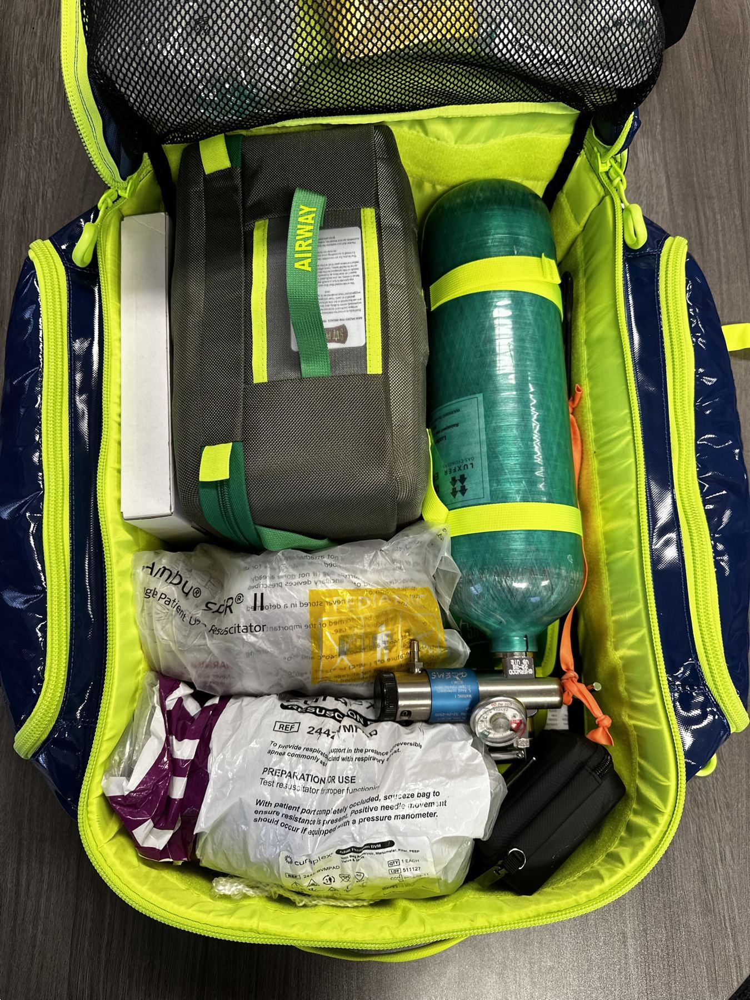
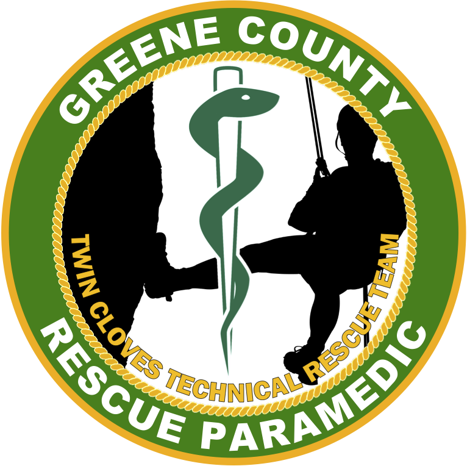
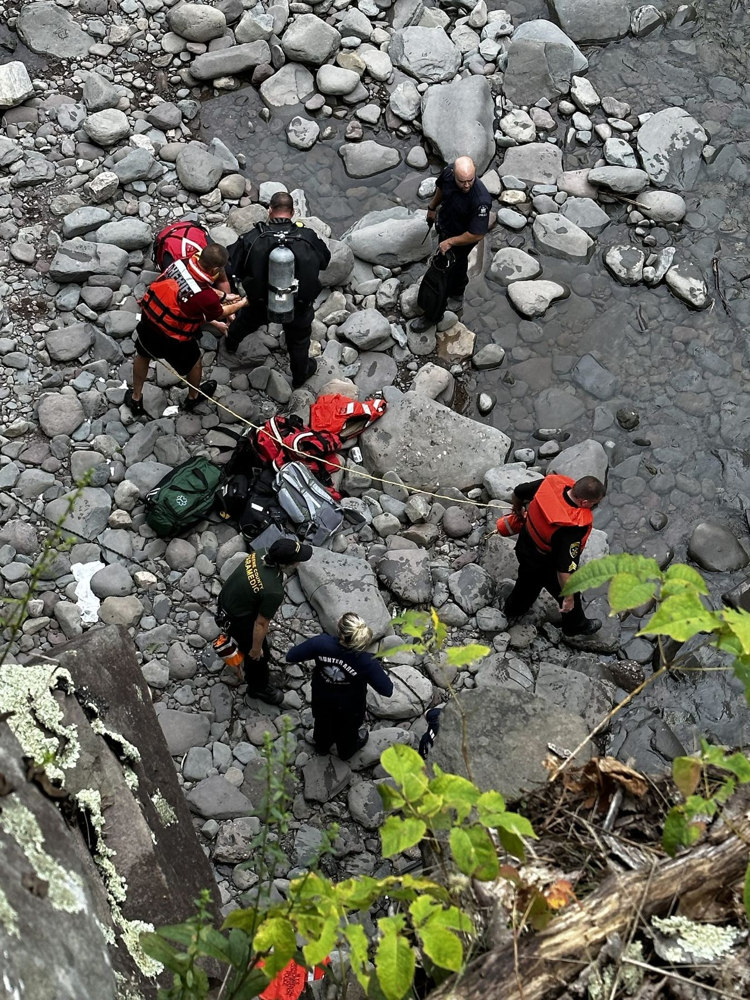
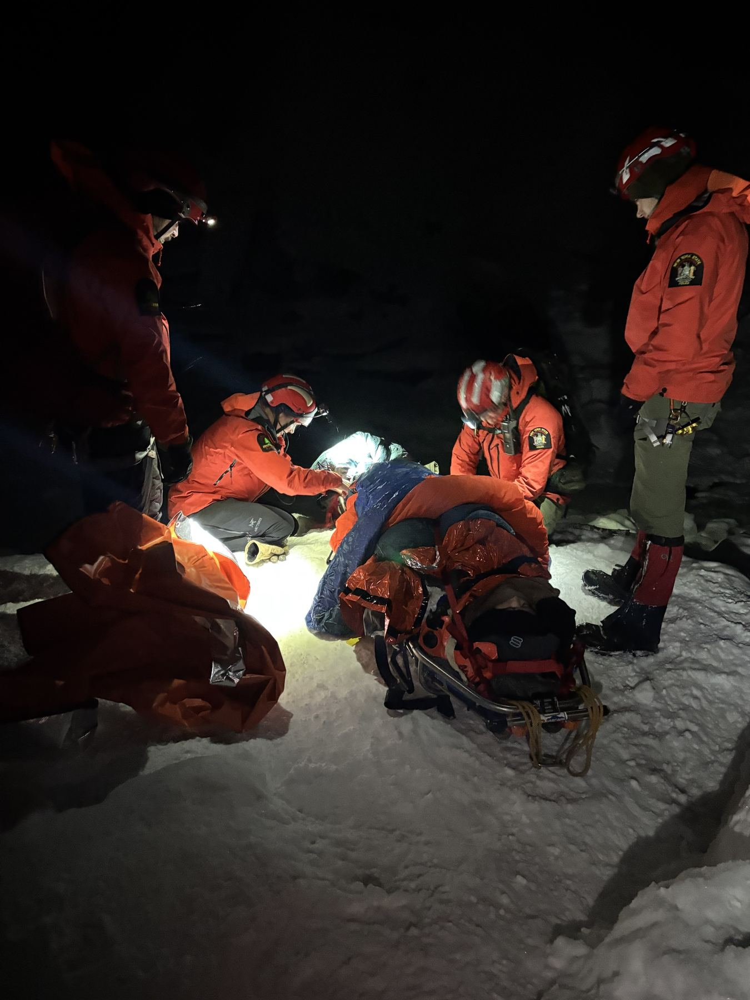

Critical care,
by ground.
Full advanced life support, meaning every medication and intervention New York State allows a paramedic to provide. On top of that, the ventilators and infusion pumps that keep a sick patient stable on a ride that can run well over an hour.

An ICU-worthy ventilator in every car
The Hamilton T1 is the ventilator critical-care transport teams rely on. Since 2023 it has ridden in every one of our units, letting a paramedic deliver lung-protective ventilation from the first minute and hand off a stable patient an hour later.
Read the three-year program reviewInfusions measured to the drop
Infusion pumps let our paramedics run medications as continuous drips at a set rate, the way a hospital would, instead of eyeballing a drip chamber in the back of a moving ambulance. The pump keeps the rate accurate for the whole ride.

Rapid sequence intubation
RSI uses medication to safely secure the airway of a patient who can't protect their own. Most ground ALS agencies in New York are not authorized to perform it. Ours is, through our medical director, with the training, equipment and case review a program like this demands.
See the airway, don't guess at it
Every unit carries a UESCOPE video laryngoscope. A camera on the blade puts the vocal cords on a screen, so the paramedic places the tube by sight whether that's on the roadside, in a kitchen, or in the back of a moving ambulance. More tubes go in on the first try, and the patient spends less time without oxygen.
The rest of the kit
Every unit carries the same medications and the same equipment. The care you get in Prattsville is the care you get in Coxsackie.


Special operations · Twin Cloves Technical Rescue TeamRescue paramedics for Catskills terrain
Members of our team serve on the Twin Cloves Technical Rescue Team, trained for backcountry, high-angle and swift-water incidents. When the patient is at the bottom of a ravine, a paramedic can get to them.


93A County Route 84, Cairo, NY 12413 · (518) 622-8092 · Chief@greene-ems.com · Accessibility